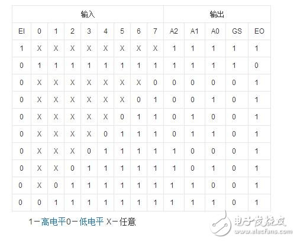

<hr>
<h2 id="title-74系列芯片学习date-2021-04-21-19-27-41typora-root-url-74ICtags-硬件-数电-categories-芯片">title:  74系列芯片学习<br>
date: 2021-04-21 19:27:41<br>
typora-root-url: 74IC<br>
tags: [硬件, 数电]<br>
categories: 芯片</h2>
<h1>74系列芯片学习</h1>
<h3 id="74LS148">74LS148</h3>
<p>优先编码器</p>
<ol>
<li>D0 - D7 是输入</li>
<li>D0 是二进制输入第一位</li>
<li>D0权重最低, D1, D2 … 权重依次递增</li>
<li>如果D0 和 D1 同时为高电平, 则相当于D1为高电平, 因为D1的权重高于D0的权重</li>
<li>EI(8脚)为使能端</li>
</ol>
<p></p>
<h3 id="74LS138">74LS138</h3>
<h3 id="CD4028">CD4028</h3>
<h3 id="74LS74">74LS74</h3>
<blockquote>
<p>七段字形译码器</p>
</blockquote>
<hr>
<h2 id="数据选择器">数据选择器</h2>
<h3 id="74138">74138</h3>
